Participants
- Nic Jansma, Yoav Weiss, Adrian de la Rosa, Guohui Deng, Noam Helfman, Noam Rosenthal, Barry Pollard, Andy Davies, Bas Schouten, Chris Harrelson, Joone Hur, Benjamin De Kosnik, Victor Huang, Patrick Meenan, Dave Hunt, Amiya Gupta, Giacomo Zecchini, Alex Christensen, Philip Tellis
Admin
Minutes
Recording
- Noam: Declarative partial updates and out of order streaming
- ... We see a lot of people building app-like experiences on the web
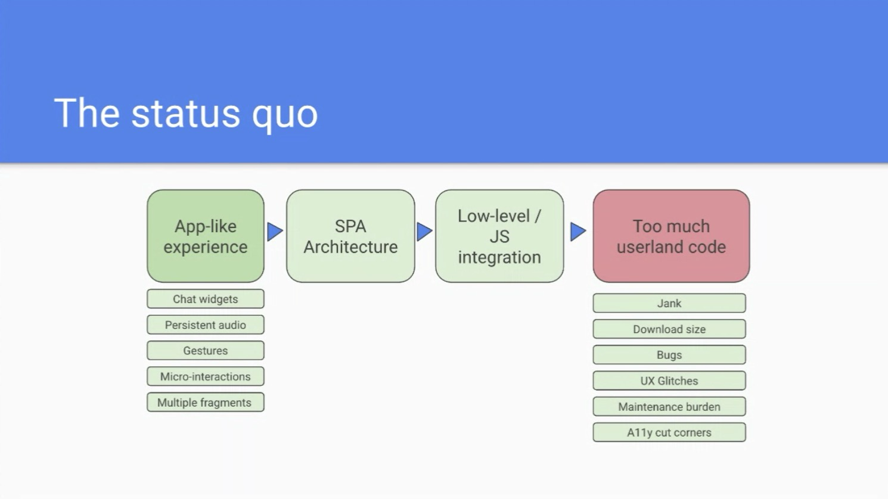
height: 350.67px; margin-left: 0.00px; margin-top: 0.00px; transform: rotate(0.00rad) translateZ(0px); -webkit-transform: rotate(0.00rad) translateZ(0px);" title="">- ... People choose a SPA architecture updating the document multiple times
- ... When they go to SPA, they do a lot of JavaScript integration
- ... Leads to a lot of user-land code
- ... Jank, big download size, bugs from code, UX glitches, maintenance burden, accessibility
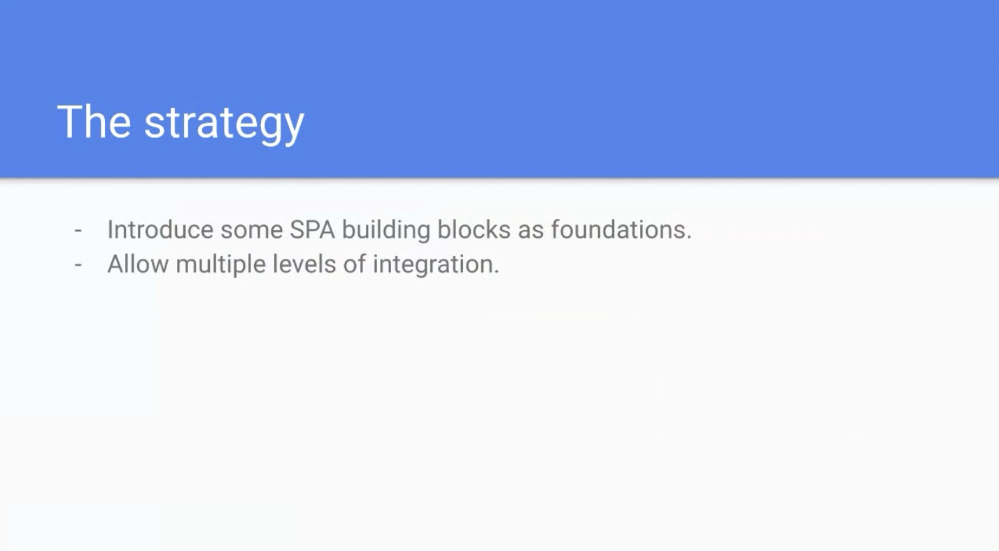
height: 344.00px; margin-left: 0.00px; margin-top: 0.00px; transform: rotate(0.00rad) translateZ(0px); -webkit-transform: rotate(0.00rad) translateZ(0px);" title="">- ... Make some building blocks for platform
- ... So people can integrate into existing framework, or use directly, without a bunch of big JavaScript
- height: 354.67px; margin-left: 0.00px; margin-top: 0.00px; transform: rotate(0.00rad) translateZ(0px); -webkit-transform: rotate(0.00rad) translateZ(0px);" title="">
- ... Foundations we're looking at
- height: 348.00px; margin-left: 0.00px; margin-top: 0.00px; transform: rotate(0.00rad) translateZ(0px); -webkit-transform: rotate(0.00rad) translateZ(0px);" title="">
- ... Document is tuned for paging
- ... Modern apps are built around scrolling
- ... IFRAMEs built for this but aren't useful
- ... So a single page is composed of fragments that should otherwise be documents
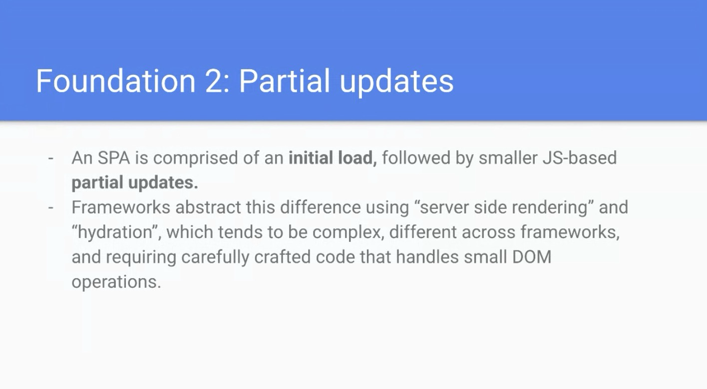
height: 344.00px; margin-left: 0.00px; margin-top: 0.00px; transform: rotate(0.00rad) translateZ(0px); -webkit-transform: rotate(0.00rad) translateZ(0px);" title="">- ... Initial load that is useful for SEO, then smaller JavaScript updates
- ... This duality is complicated
- ... SSR/hydration is different across frameworks, complicated, carefully crafted
- ... "Patching" is streaming HTML content into existing DOM
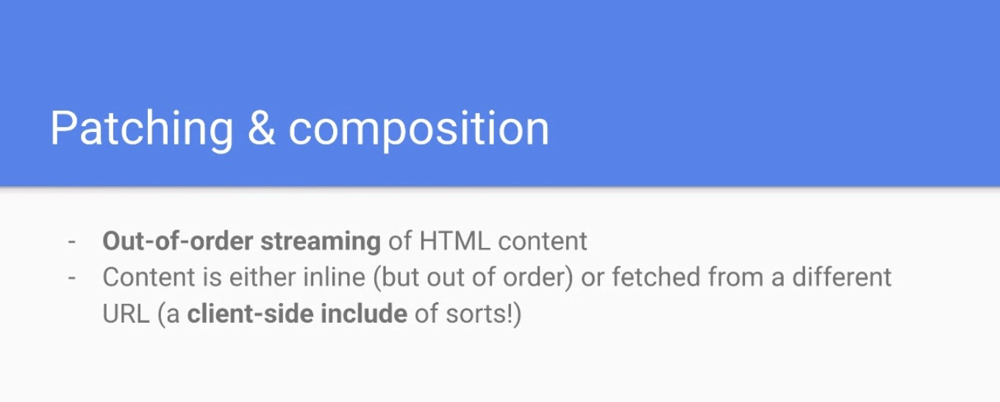
height: 252.00px; margin-left: 0.00px; margin-top: 0.00px; transform: rotate(0.00rad) translateZ(0px); -webkit-transform: rotate(0.00rad) translateZ(0px);" title="">- ... Allow out-of-order streaming
- ... Example is SELECT box high in DOM, list of countries/users takes a while, but skip that and stream rest of HTML. Put content into box of elements later.
- ... Content can be inline or from another URL
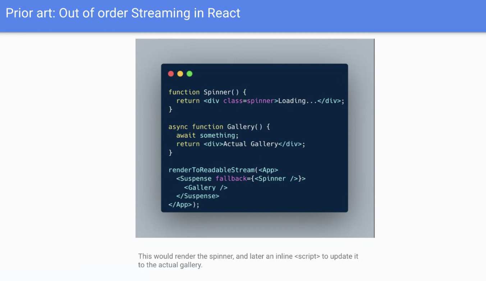
height: 361.33px; margin-left: 0.00px; margin-top: 0.00px; transform: rotate(0.00rad) translateZ(0px); -webkit-transform: rotate(0.00rad) translateZ(0px);" title="">- ... Render has renderToReadableStream, can have boundaries, in this case the Spinner would be rendered into HTML
- ... When gallery is ready, React will stream out inline script element that updates the Spinner. Targets comment node before and after.
- ... How to propose to solve this is start from HTML
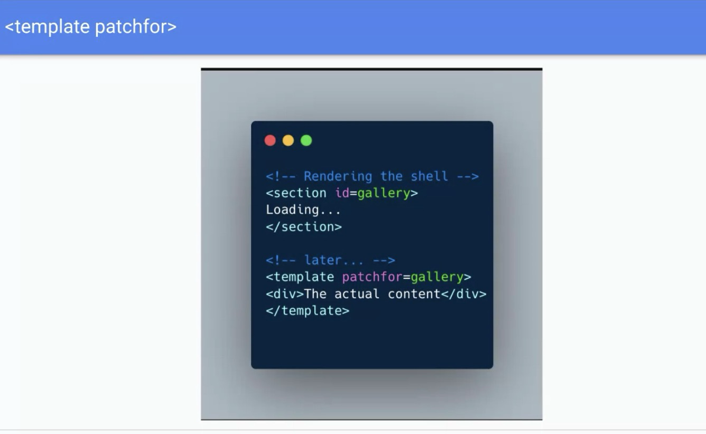
height: 384.00px; margin-left: 0.00px; margin-top: 0.00px; transform: rotate(0.00rad) translateZ(0px); -webkit-transform: rotate(0.00rad) translateZ(0px);" title="">- ... Whatever is streamed into template is re-routed to target
- ... Loading would be replaced progressively
- ... Other is patchsrc, stream to it from another URL
- ... Fetched with CORS
- ... Similar to client side includes
- ... Have ways to update, abort, intercept, etc
- ... Partial updates, after you load document
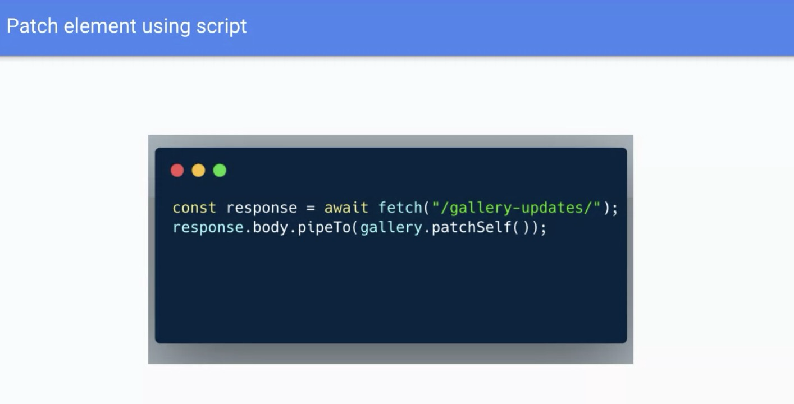
height: 317.33px; margin-left: 0.00px; margin-top: 0.00px; transform: rotate(0.00rad) translateZ(0px); -webkit-transform: rotate(0.00rad) translateZ(0px);" title="">- ... How we deal with partial updates after document is loaded
- ... .patchSelf() to container node, can pipe anything to it, anything Streamable
- ... Bytes decoded using document's charset and piped to HTML
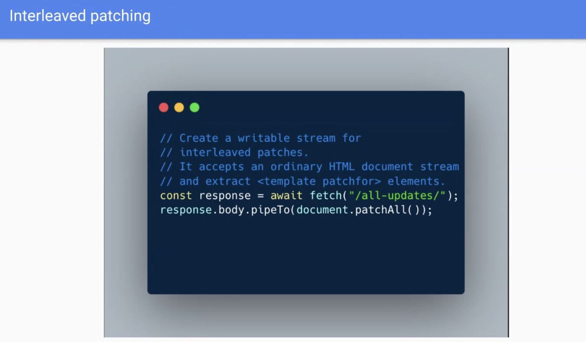
height: 364.00px; margin-left: 0.00px; margin-top: 0.00px; transform: rotate(0.00rad) translateZ(0px); -webkit-transform: rotate(0.00rad) translateZ(0px);" title="">- ... Also have a response that could be the whole document, I could stream this
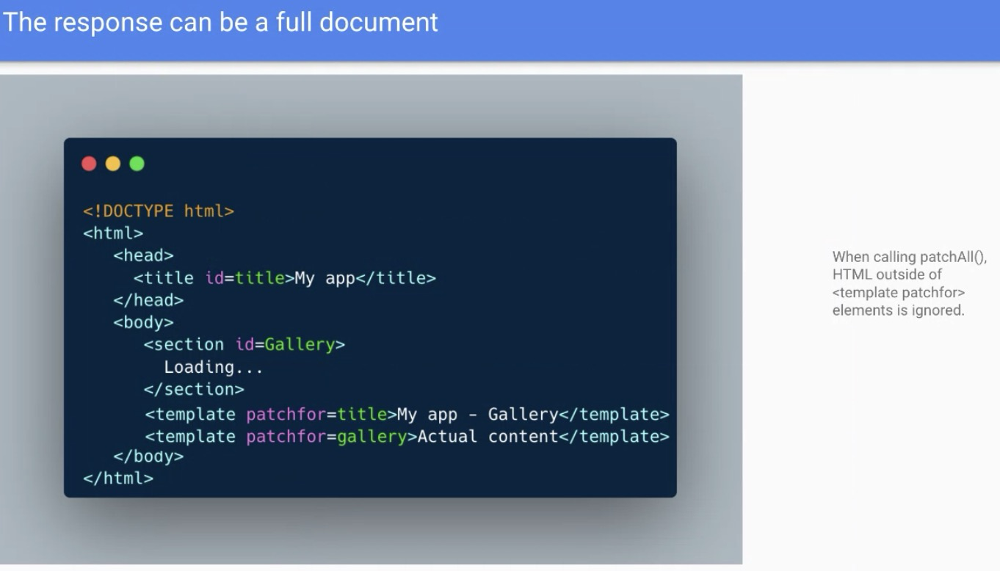
height: 356.00px; margin-left: 0.00px; margin-top: 0.00px; transform: rotate(0.00rad) translateZ(0px); -webkit-transform: rotate(0.00rad) translateZ(0px);" title="">- ... Only changes would apply, the title and gallery
- ... Or I can just stream this response
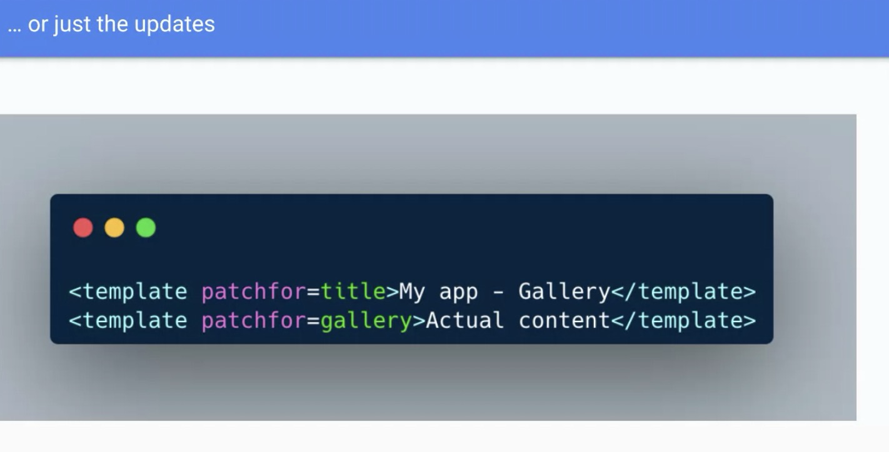
height: 317.33px; margin-left: 0.00px; margin-top: 0.00px; transform: rotate(0.00rad) translateZ(0px); -webkit-transform: rotate(0.00rad) translateZ(0px);" title="">- ... Nice thing is author doesn't have to think about soft or hard navigation
- ... Works with regular navigation
- ... Contains reflection
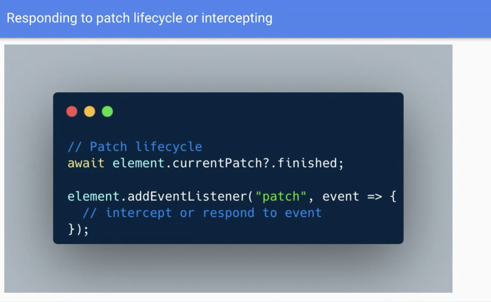
height: 384.00px; margin-left: 0.00px; margin-top: 0.00px; transform: rotate(0.00rad) translateZ(0px); -webkit-transform: rotate(0.00rad) translateZ(0px);" title="">- ... Have a promise when finished
- ... Patch event that can be intercepted
- ... Selector telling you patch is happening
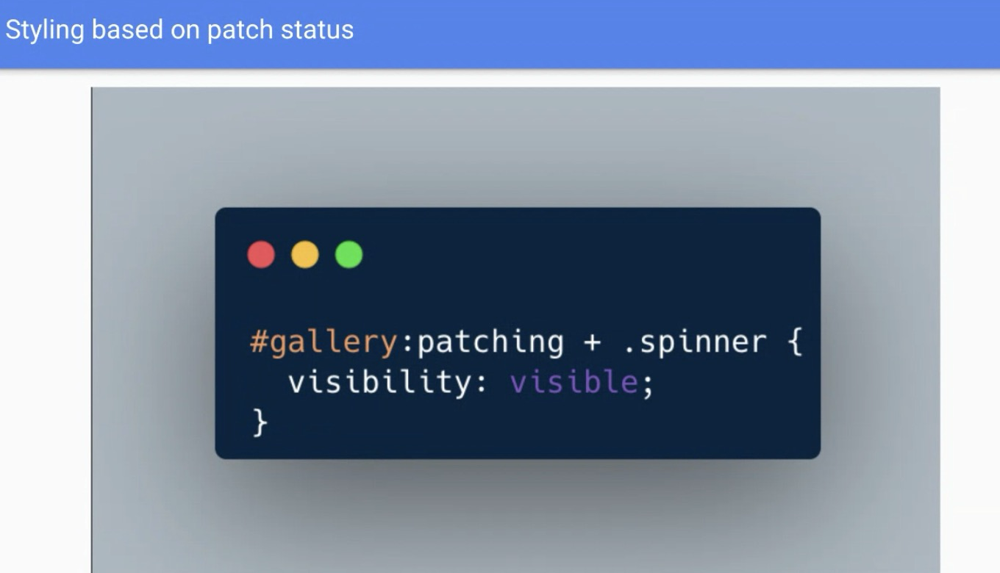
height: 357.33px; margin-left: 0.00px; margin-top: 0.00px; transform: rotate(0.00rad) translateZ(0px); -webkit-transform: rotate(0.00rad) translateZ(0px);" title="">- ... Make patching elements invisible while being patched
- ... Also patch into a range
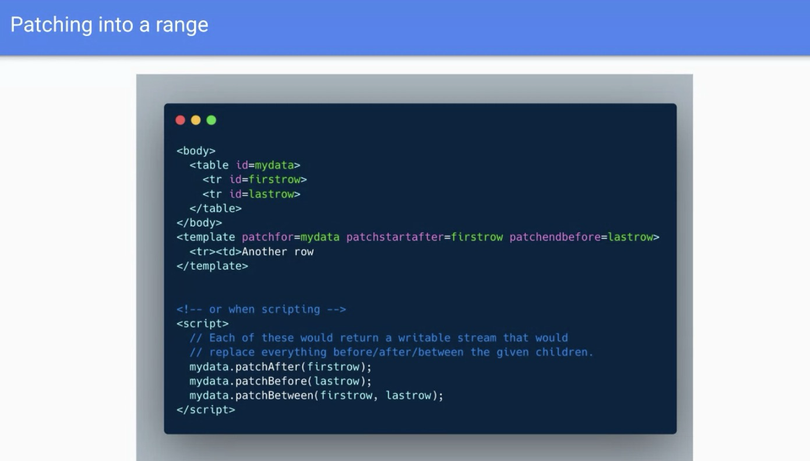
height: 356.00px; margin-left: 0.00px; margin-top: 0.00px; transform: rotate(0.00rad) translateZ(0px); -webkit-transform: rotate(0.00rad) translateZ(0px);" title="">- ... Select a range that's between two IDs and stream into that
- ... In conversation about security with this
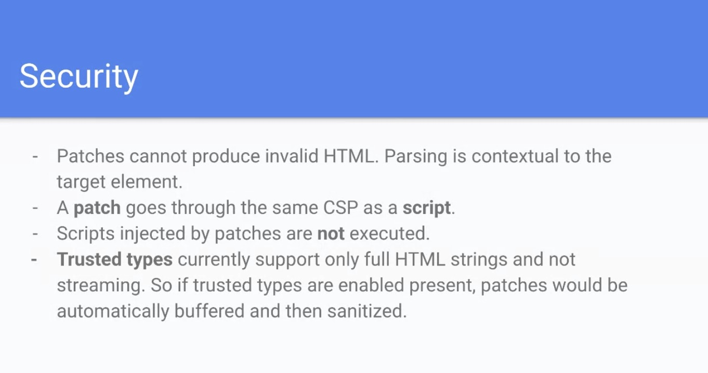
height: 329.33px; margin-left: 0.00px; margin-top: 0.00px; transform: rotate(0.00rad) translateZ(0px); -webkit-transform: rotate(0.00rad) translateZ(0px);" title="">- ... Invalid HTML, parser knows how to deal with this
- ... Trusted types turns off streaming
- [demo]
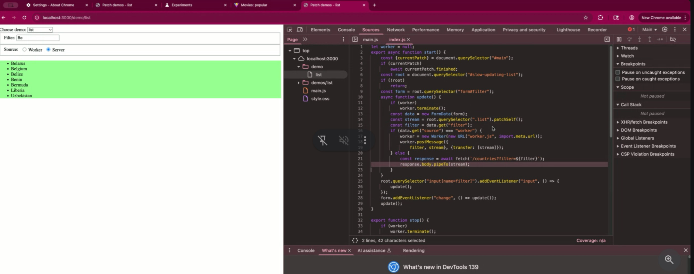
height: 246.67px; margin-left: 0.00px; margin-top: 0.00px; transform: rotate(0.00rad) translateZ(0px); -webkit-transform: rotate(0.00rad) translateZ(0px);" title="">- Jacob: SPA navigation how would streaming work with regards to painting? If you patch the entire <body> (e.g. during a SPA navigation), how would the streaming work? E.g. how does the browser know when to paint / how long to paint hold? (if you compare it to a MPA nav)
- Noam: Patching doesn't do anything for that
- ... Something we're hoping to build on top of
- Jacob: Would it make sense to combine this with link rel that does some paint holding
- Noam: One layer above this
- ... Right now this is agnostic to rendering
- ... Its own thing that doesn't do navigations, because it has utility out of this
- Yoav: If I understand demo, if you have templates with patchFor attributes, that override, that would just override the content
- ... Multiple patchFor for a single ID, what happens?
- Noam: One HTML stream, last wins, works like streaming HTML
- ... If you use JavaScript APIs you'll have a conflict, newest one wins
- Yoav: CORS fetching HTML patchSrc
- ... On server side does it look different? Distinguish from regular HTML but they don't have to
- Noam: Could re-use navigation, but when you really want to optimize you don't want to re-use, so it's helpful to be agnostic
- Yoav: Destination is not document, but a script?
- ... sec-fetch-dest?
- Noam: "patch"
- Adrian de la Rosa: What happens if we update a template? afaik, template is inert element
- Noam: Not attached to document, you can access in patch event
- Yoav: Different behavior from current template elements?
- Noam: Not from shadow root mode, it disappears
- ... What template-element does internally is it re-routes its contents somewhere
- Bas: Any plans to present in other venues?
- Noam: Presented elsewhere already, Olli is aware
- ... Further along in understanding how this works, presentation from a month ago was a bit more initial.
- Jacob: Regarding streaming, patching entire BODY, how does streaming from fetch call work?
- Noam: Should stream directly into parser, would get chunks into body of original HTML
- Noam (H)elfman: Would patch update while its streaming?
- Noam: Would stream
- Noam H: What happens if you have a high rate of streaming?
- Noam: I think this would fall under fetch priority
- ... Think about how it applies to fetchSrc
- ... Falls under streams in general, strategies around that
- Adrian: Related to styles. Streaming different parts of document, what happens when parses out of order?
- ... In example updating a list, below the list, there's one style for whole document. Streaming but you update the style for document. Parser is going to parse styles out of order.
- Noam: Same as append a child out of order, e.g. from JavaScript.
- ... Stylesheet itself doesn't support streaming, the <style> element doesn't stream, waits until it's done, same as <script>
- Noam H: Can you elaborate what parts of this proposal can't be polyfilled?
- ... And where not, conveniences or ergonomics?
- Noam: Some can be polyfilled, some not.
- ... Streaming parse into element is not polyfillable
- ... Can parse it by fragment but that's not streaming
- ... MutationObserver but that's nots streaming either
- ... Definitely not polyfillable in a performant way
- ... Don't check for HTML validity like parser
- ... Some things are not polyfillable with developer experience
- ... I would say one motivation for us to build this is promises were also polyfillable
- ... Major reason is that we want to build things on top of this
- ... Can't build on top of things in userland
- ... Whole process of navigation to have a browser built-in thing
- Yoav: Detached template element, doesn't that make it harder to polyfillable and make DOM differences?
- ... You could remove template element from polyfill when patched?
- Noam: Yah, remove it
- Yoav: Thinking of compat implications, obvious it can't remain polyfill forever
- ... But in terms of adoption in the wild, can this get wide adoption before all browsers adopt the feature?
- ... What you're saying is streaming wont' work so there's some perf differences, but generally content wont' be broken
- Noam: Right. I have a polyfill on a demo repo, uses MutationObserver. Can polyfill a correct version w/out performance characteristics.
- Yoav: Have you talked w/ framework community?
- Noam: Smaller frameworks yes, Astro, HTMx
- ... One thing at a time
- ... React has out-of-order streaming, Nux does not
- ... Repo has other sections around considerations
- ... Right now where we are with this, is we have a prototype in Chrome Canary via about://flags
- ... Thirsty for feedback